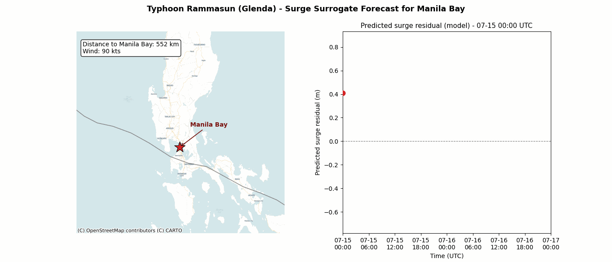

Operational Analysis
Extracted and mapped spatial data using ArcGIS Pro and Excel, executed database quality audits, and delivered executive performance dashboards.
I am Kerwin Dio Joseph Arlan, a Civil Engineering candidate at UP Diliman. I automate PAGASA cyclone tracking, calibrate storm-surge models for Manila Bay, and bring hands-on GIS, data analysis, AI data operations, and structural mechanics rigor to every team I join.
A cross-disciplinary foundation built through real operational work, technical QA, client support, and long-term academic teaching.
Extracted and mapped spatial data using ArcGIS Pro and Excel, executed database quality audits, and delivered executive performance dashboards.
Cleaned, validated, annotated, and audited complex datasets for AI operations while helping refine human-in-the-loop workflows.
Handled site inspection, quantity takeoffs, and structural mechanics calculations alongside hydrodynamic storm surge modeling in Delft3D.
Taught mathematics, science, and technical concepts to diverse students over several years, sharpening communication under pressure.
Every role reinforced the same core habits: investigate carefully, document the process, communicate clearly, and elevate operational quality.
Practical tools applied to analyze data, maintain quality, and keep workflows moving.
Formal Civil Engineering training paired with continuous technical development.
Japanese Language Training (Mar 2024 - Dec 2024), ArcGIS Spatial Analysis, and continuous AI Data Engineering practice.
Automated hazard forecasting, hydrodynamic surrogates, structural mechanics solvers, and local productivity tools.
Autonomous tropical cyclone agent watching PAGASA bulletins, parsing storm data via Pydantic & DeepSeek V3, generating GeoJSON tangential cones of uncertainty, and publishing interactive maps to GitHub Pages on an automated schedule.
Gradient-boosting ML surrogate model trained on numerical hydrodynamic simulations to predict storm surge peak elevations and inundation depths in Manila Bay under real-time cyclone trajectories.

I am open to full-time roles in data analysis, engineering, GIS, and AI operations starting August 2026.